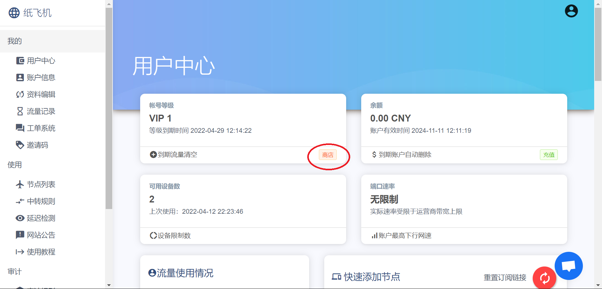
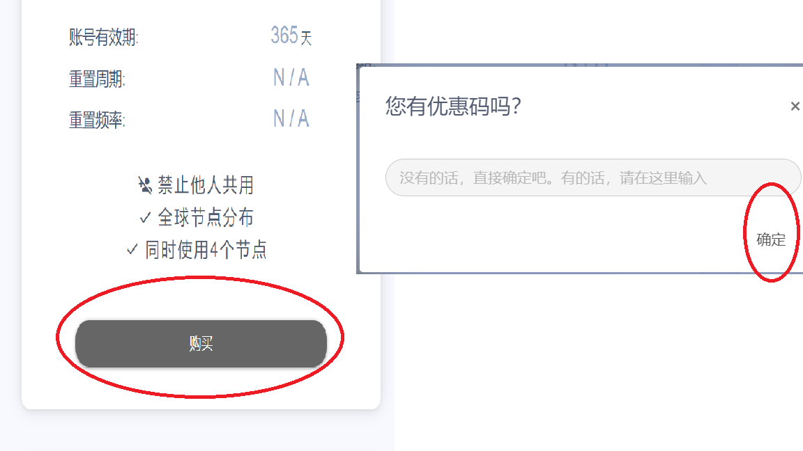
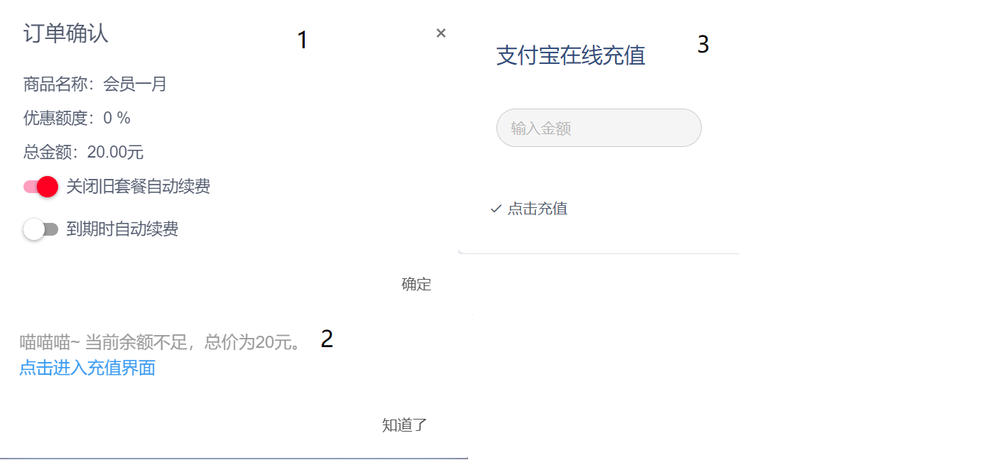

如何翻墙 - 新手教程
本文最后更新于：3 months ago
为什么要翻墙
众所周知，在中国大陆境内，有一堵看不见的墙.
防火长城（英语：Great Firewall，常用简称：GFW），中文也称中国国家防火墙，俗称墙、网络长城、防火墙等等，中国国家互联网信息办公室称为数据跨境安全网关，是中华人民共和国政府监控和过滤互联网国际出口内容的软硬件系统集合。随着使用的拓广，“墙”有时也被用作动词，中国网友所说的“被墙”即指网站内容被防火长城所屏蔽或者指服务器的通讯被封阻，“翻墙”“挂梯子”也被引申为突破网络审查浏览中国大陆境外被屏蔽的网站或使用服务的行为。
来源 Wikipedia[1].
而我们要是想跨过 GFW, 访问 YouTube, Google, Twitter 等网站时，就需要「翻墙」了.
本篇教程将会详细地讲解如何进行翻墙，如有不理解的地方或文章中某些链接失效，都可在下方评论区留言.
准备
- 一个能正常接收国内外来信的电子邮箱（QQ邮箱不是一个好选择）
- 一个能正常运转的 PC 端浏览器
Let’s Go!
开始
本文使用的是「纸飞机」提供的服务.
Step 1: 请到 https://asd.sr9.xyz/auth/register?code=CSA3 处根据提示使用邮箱完成注册.（邀请码 请务必填写CSA3 不要改动）
Step 2: 根据图片提示，进入商店.（此处需要 RMB）

下滑，找到 「会员一月 ￥20.00 200G / 31天」或「一月会员 ￥15.00 150G / 30天」或「商务vip ￥10.00 50G / 30天」其中任意一个套餐。
选择一个购买即可，三种套餐几乎没有什么差别，如果只是想试试水的话，可以先购买「商务vip」套餐，10元每月，可以不自动续费.
下面以「会员一月 20元每月」套餐进行演示

使你的选项和下图1的选项一样后（套餐和价格可能有差异，不影响），点击「确定」.
出现图2画面时，点击「点击进入充值界面」，然后在图3「输入金额」的框中填入你的套餐的价格，最后点击充值即可.
（「纸飞机」系统要求使用支付宝）

结束了？
剩余内容请先参考 纸飞机官方教程.
Windows 用户请点击顶栏中的 V2ray, 然后查看「Windows 安装使用」.
先鸽着.
Footnotes
- https://zh.wikipedia.org/wiki/防火长城 ↩
- 本站 PixEL | Blog 的简称. ↩
Unless otherwise stated, all articles of PixEL | Blog use the CC BY-NC-SA 4.0 Agreement. Please indicate the source for reprinting.